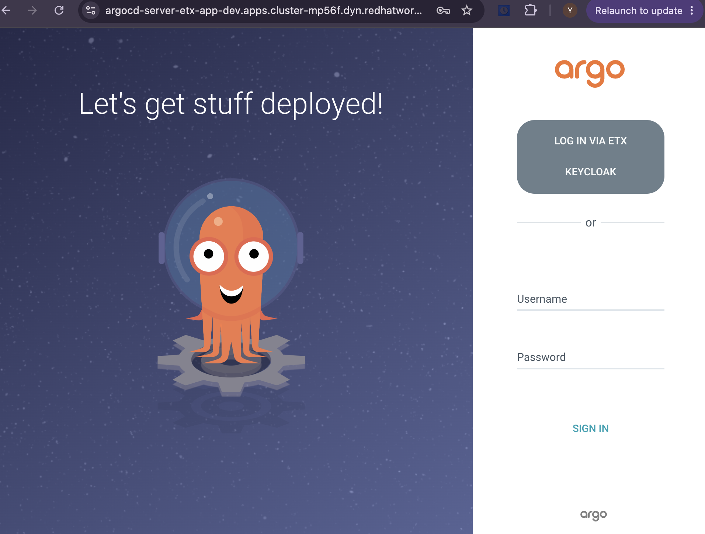
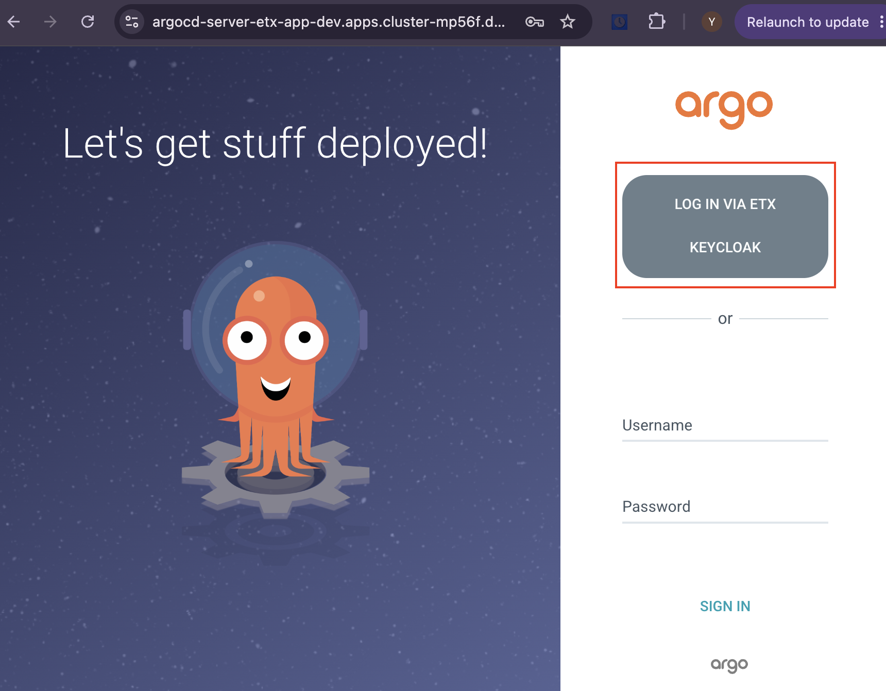

Lab 7: Deploy an Argo CD Instance
In this lab, you’ll deploy an Argo CD instance in your development project and configure it to use the shared Keycloak OpenID Connect (OIDC) integration created in the previous lab.
By the end of this lab, you will have:
-
Deployed an Argo CD instance in the
etx-app-devproject -
Configured Argo CD to authenticate using the shared Keycloak OIDC integration
-
Verified that the Argo CD components and Route are available
-
Accessed the Argo CD dashboard using Keycloak Single Sign-On
Deploy the Argo CD Instance
In this exercise, you’ll deploy an Argo CD instance that will be used to manage application deployments throughout the remaining labs.
-
Open a terminal in your OpenShift Dev Spaces workspace or launch the Web Terminal from the OpenShift console.
-
Retrieve the cluster domain:
# Get cluster domain from the existing Keycloak route CLUSTER_DOMAIN="$(oc get route -n keycloak \ -o jsonpath='{.items[0].spec.host}' | sed 's/sso\.apps\.//')" echo "Cluster domain: ${CLUSTER_DOMAIN}" -
Deploy the Argo CD instance:
CLUSTER_DOMAIN="$(oc get route -n keycloak \ -o jsonpath='{.items[0].spec.host}' | sed 's/sso\.apps\.//')" cat <<EOF | oc apply -f - apiVersion: argoproj.io/v1beta1 kind: ArgoCD metadata: name: argocd namespace: etx-app-dev spec: server: autoscale: enabled: false grpc: ingress: enabled: false ingress: enabled: false insecure: true resources: limits: cpu: 500m memory: 256Mi requests: cpu: 125m memory: 128Mi route: enabled: true tls: termination: edge insecureEdgeTerminationPolicy: Redirect service: type: ClusterIP grafana: enabled: false ingress: enabled: false route: enabled: false prometheus: enabled: false ingress: enabled: false route: enabled: false initialSSHKnownHosts: {} rbac: defaultPolicy: 'role:readonly' policy: | g, platform-admin, role:admin g, platform-developer, role:admin scopes: '[groups, preferred_username]' extraConfig: oidc.config: | name: ETX Keycloak issuer: https://etx-sso.apps.${CLUSTER_DOMAIN}/realms/etx-lab clientID: argocd clientSecret: $argocd-oidc-secret:clientSecret requestedScopes: - openid requestedIDTokenClaims: groups: essential: true logoutURL: https://etx-sso.apps.${CLUSTER_DOMAIN}/realms/etx-lab/protocol/openid-connect/logout repo: resources: limits: cpu: 1000m memory: 1Gi requests: cpu: 250m memory: 256Mi resourceExclusions: | - apiGroups: - tekton.dev clusters: - '*' kinds: - TaskRun - PipelineRun controller: processors: {} resources: limits: cpu: 2000m memory: 2Gi requests: cpu: 250m memory: 1Gi ha: enabled: false resources: limits: cpu: 500m memory: 256Mi requests: cpu: 250m memory: 128Mi EOF
The command deploys an Argo CD instance named argocd in the etx-app-dev project.
The server.insecure: true setting configures Argo CD to serve HTTP traffic internally while the OpenShift Route performs TLS termination. This prevents redirect loops (ERR_TOO_MANY_REDIRECTS) when using edge TLS termination.
|
The Argo CD custom resource references the argocd-oidc-secret created in the previous lab, enabling authentication through the shared Keycloak OIDC client.
|
Verify the Argo CD Deployment
Wait for the Argo CD components to start.
-
Run the following command:
oc get pods -n etx-app-dev -w
Wait until all argocd-* pods report a status of 1/1 Ready, then press Ctrl+C to stop watching.
Once all pods are running, your Argo CD instance is ready to manage GitOps applications in the following labs.
Verify Route Creation
The Argo CD server is exposed through an OpenShift Route, allowing you to access the web dashboard from your browser. In this exercise, you’ll verify that the route exists and retrieve the dashboard URL.
-
Verify that the Argo CD route has been created:
oc get route argocd-server -n etx-app-dev
Figure 1. Sample Argo CD RouteIf the route does not exist, create it manually:
oc create route edge argocd-server \ --service=argocd-server \ --port=http \ --insecure-policy=Redirect \ -n etx-app-dev
Access the Argo CD Dashboard
Retrieve the Argo CD dashboard URL and sign in to verify that your deployment is working correctly.
-
Get the Argo CD URL:
echo "https://$(oc get route argocd-server -n etx-app-dev -o jsonpath='{.spec.host}')" -
Open the displayed URL in your browser.
You can authenticate using either ETX Keycloak Single Sign-On or the built-in Argo CD administrator account.
Sign in with ETX Keycloak (Recommended)
-
On the Argo CD login page, select ETX Keycloak.

-
Sign in using one of the lab credentials:
-
platform-admin/openshift -
platform-developer/openshift
-
-
After successful authentication, you’ll be redirected to the Argo CD dashboard.
| Keycloak Single Sign-On provides the same authentication experience used throughout the ETX platform, including GitLab, Quay, and Vault. |
Sign in with the Admin Account (Optional)
If you prefer to use the built-in administrator account:
-
Retrieve the default admin password:
oc get secret argocd-cluster -n etx-app-dev \ -o jsonpath='{.data.admin\.password}' | base64 -d && echo -
Sign in using:
-
Username:
admin -
Password: Output from the previous command
-
Troubleshooting Dashboard Access
If you receive an ERR_TOO_MANY_REDIRECTS error when opening the Argo CD dashboard, verify that the Argo CD server is configured to run in insecure mode behind the OpenShift TLS-terminating route.
-
Confirm the current setting:
oc get argocd argocd -n etx-app-dev \ -o jsonpath='{.spec.server.insecure}{"\n"}'The command should return:
true -
If the value is not
true, update the Argo CD instance:oc patch argocd argocd -n etx-app-dev --type=merge \ -p '{"spec":{"server":{"insecure":true}}}' -
Wait for the Argo CD server pod to restart:
oc get pods -n etx-app-dev \ -l app.kubernetes.io/name=argocd-server -wPress Ctrl+C once the new pod reports
1/1 Ready.
| If the redirect error persists after the pod restarts, clear your browser cache or open the dashboard in an incognito/private browsing window before trying again. |